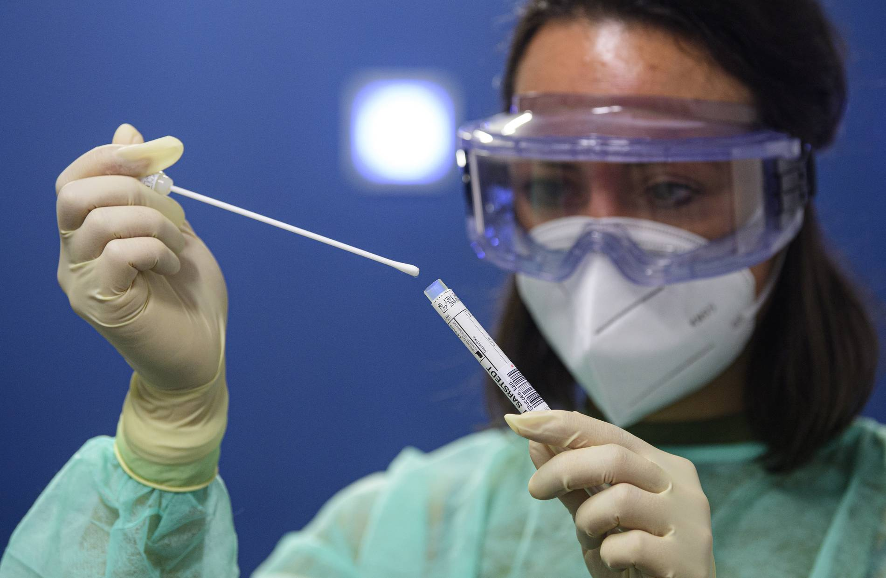
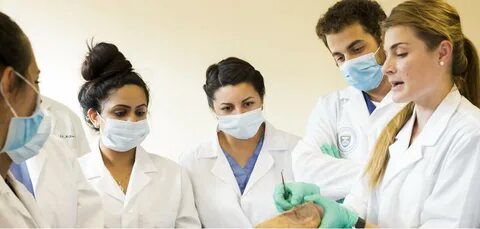
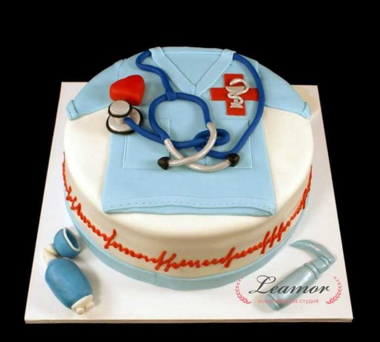
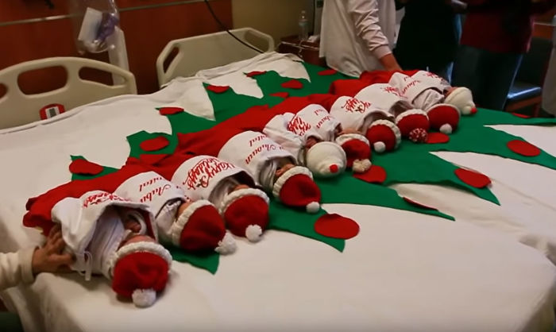
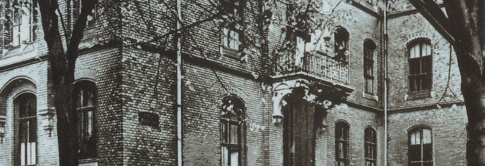

jüngste Tragödie
Die jüngste Explosion forderte viele unserer Mitarbeiter und Patienten. Bringen wir sie zu Ende.
Zunehmende Fälle von Covid-19-Infektionen
Am vergangenen Tag hat sich die Zahl der Infizierten um das Dreifache erhöht.
St. Vincenz-Geburtshilfe ist die größte in NRW
Zum Jahresabschluss kamen Drillinge ohne Kaiserschnitt gesund zur Welt
Abschied vom Chefarzt
Wir werden Sie vermissen, Mr. Robinson. Wir wünschen Ihnen alles Gute und eine gute Rente
30. Geburtstag unseres Krankenhauses
Dies ist ein einzigartiger Tag, den Sie nicht verpassen sollten. Anlässlich des Jubiläums des Krankenhauses sollte man Gesundheit und Freude wünschen
Weihnachten
Frohes neues Jahr für Sie. Wir wünschen Ihnen ein gutes und gesundes Leben.
Arzttermin
ÜBER UNS
Herzlich willkommen im St. Vincenz-Krankenhaus Paderborn
Unser Krankenhaus Im Herzen Paderborns in unmittelbarer Nähe zum Dom und zur Fußgängerzone gelegen, ist das St. Vincenz-Krankenhaus seit über 100 Jahren für die moderne und von christlichen Werten geleitete Behandlung von Patienten bekannt. Träger sind die Barmherzigen Schwestern des Heiligen Vincenz von Paul. Das Akademische Lehrkrankenhaus der Universität Göttingen genießt bei Patienten aus der gesamten Region des Paderborner Landes einen exzellenten Ruf. 1901 gegründet, verfügt das St. Vincenz-Krankenhaus heute über 434 Betten in den Fachabteilungen für Innere Medizin/ Gastroenterologie, Onkologie und Nephrologie, Gefäßchirurgie, Neurologie, Kardiologie/ Internistische Intensivmedizin, Orthopädie/Unfallchirurgie/Sporttraumatologie, Allgemein- und Visceralchirurgie. An die Kliniken angegliedert sind ein Ambulantes OP-Zentrum sowie zertifiziertes Darmzentrum, Endoprothetikzentrum, MS-Zentrum und die Stroke Unit für Schlaganfallspatienten. Radiologie und Anästhesiologie ergänzen zudem das Spektrum. Jährlich behandeln wir im St. Vincenz-Krankenhaus rund 23.000 Patienten stationär. Besonderen Komfort ermöglicht die neu eingerichtete Wahlleistungsstation mit ihren geräumigen, elegant ausgestatteten Ein- und Zweibettzimmern. Die Station kombiniert qualitativ hochwertige Medizin und zugewandte Pflege mit besonderer Ausstattung und Premium-Dienstleistungen. Das geschäftige Treiben Paderborns können alle Patienten von der modern eingerichteten Cafeteria des Hauses aus in Ruhe beobachten: Die von zwei Seiten komplett verglaste Cafeteria ist zudem mit freiem WLAN ausgestattet.

Krankenhaus-Historie
Über einhundert Jahre Dienst am Menschen
Das Paderborner St. Vincenz-Krankenhaus hat seine Wurzeln seit mehr als einhundert Jahren in der „Kongregation der Barmherzigen Schwestern vom Hl. Vincenz von Paul zu Paderborn“. Als die ersten Barmherzigen Schwestern im März 1841 nach Paderborn kamen, wurde Ihnen zunächst das heutige Landeshospital zugleich Mutter- und Krankenhaus. Schon wenige Jahre später machte die stetig wachsende Zahl an Schwestern den Neubau eines Mutterhauses „Am Busdorf“ erforderlich, das am 12. September 1857 eingeweiht wurde.
Mit der Zeit wurde klar, dass auch ein neues Krankenhaus gebraucht wurde, denn nicht nur die räumliche Enge bereitete im Landeshospital Probleme, sondern auch die Kapazitäten im Bereich der pflegerischen Ausbildung der Schwestern. Bis die Standortfrage für das neue Krankenhaus gelöst war, sollte es jedoch einige Jahre dauern. Am Ostermontag 1900 überbrachte Bürgermeister Otto Plassmann schließlich persönlich den Bewilligungsbescheid für den Bau des neuen Krankenhauses „Am Busdorf“. Schon im Oktober 1901 weihte Bischof Dr. Wilhelm Schneider das neue Krankenhaus zwischen Kasseler Straße und Busdorfwall ein. Die Zeitgenossen waren sich einig: Paderborn konnte sich glücklich schätzen, ein derart modernes Krankenhaus erhalten zu haben, das den neuesten Anforderungen der Zeit genügte.
Durch das neue Mutterhaus und das neue Krankenhaus verbesserte sich die Situation für die Schwestern deutlich. Dies machte sich auch in der Pflegeausbildung bemerkbar, die bei den Vincentinerinnen seit jeher eine große Tradition besaß. Als eine der ersten Krankenpflegeschulen in Deutschland war die Ausbildungsstätte am St. Vincenz-Krankenhaus 1908 staatlich anerkannt worden.
Die Kapazität des St. Vincenz-Krankenhauses war bis zum Jahr 1939 durch An- und Umbauten von ursprünglich 100 auf 300 Betten gestiegen. Doch mit dem Ausbruch des Zweiten Weltkriegs begann eine dunkle Zeit für das St. Vincenz-Krankenhaus, das wie im Ersten Weltkrieg als Lazarett diente. Als die Front näher rückte, flohen Schwestern und Patienten in die Dörfer rund um Paderborn. Am 24. März 1945 wurde das Krankenhaus von zahlreichen Brandbomben getroffen und brannte fast völlig aus. Der Wiederaufbau des Hauses, mit dem die Schwestern sofort nach dem Kriegsende begannen, gestaltete sich schwierig und langwierig. Erst 1948 war das Haupthaus mit 100 Betten wieder instand gesetzt.
In den folgenden Jahren bewegte sich einiges: Bis Mitte der 1950er Jahre stieg die Kapazität des Hauses wieder auf 240 Betten an. 1952 bis 1954 kam ein neuer Trakt mit 150 Betten hinzu, 1954 wurde eine Schule für Kinderkrankenpflege gegründet. Auf dem weitläufigen Gelände zwischen Busdorfwall und Kasseler Straße entstand 1962 ein Neubau für die Pflegevorschule, 1966 bis 1968 folgte der Bau eines Wohnheims für 100 Schülerinnen.
Das St. Vincenz-Krankenhaus in der Innenstadt entwickelte sich kontinuierlich: In zwei Baustufen wurde das Krankenhaus bis ins Jahr 2000 saniert und erweitert, erhielt neue Pflegestationen und eine neue Intensivstation, aber auch eine Tiefgarage für Besucher. Im Zuge der neuesten Baumaßnahme entstand zwischen 2010 und 2013 für 23 Millionen Euro ein Erweiterungsbau, der u.a. die Klinik für Neurologie mit allen Funktionsbereichen und Stationen aufnimmt. Durch den Umzug der Neurologie aus dem Landeshospital in das „Haus 1“ konnte die Versorgung in der Neurologie deutlich optimiert und der Komfort für die Patienten verbessert werden. Das Krankenhaus verfügt am Standort „Am Busdorf“ dann über knapp 500 Betten. Neu dazugekommen sind 104 Zimmer mit 186 Betten, eine Wahlleistungsstation, eine Intermediate-Care-Station und eine Infektionsstation. Grundsätzlich rüstet das St. Vincenz mit dem Neubau auch in Sachen Hygiene auf: Die neuen Stationen bieten mehr Möglichkeiten zum sicheren Isolieren von Patienten mit ansteckenden Krankheiten und Keimen. Neben den medizinischen Aspekten beinhaltet der Erweiterungsbau zusätzliche 150 Parkplätze für Besucher in der Tiefgarage.
Das Universitätsklinikum St. Vincent's Hospital Paderborn wurde bei den massiven Terroranschlägen schwer beschädigt
Liebe Freunde,
Das Universitätsklinikum St. Vincent's Hospital Paderborn wurde bei den massiven Terroranschlägen schwer beschädigt. Nach einer kürzlichen verheerenden Explosion wurde das Krankenhaus außer Betrieb gesetzt und 130 stationäre Patienten mussten aus den Stockwerken in die Notaufnahme (ER) und dann in ihre Häuser oder andere Krankenhäuser evakuiert werden. Das 300-Betten-Krankenhaus, das schon immer eine qualitativ hochwertige Versorgung geboten hat, ist plötzlich zu einem Feldlazarett geworden, das die am Boden liegenden Verletzten mit allen verfügbaren Mitteln, einschließlich der einfachsten wie Mobiltelefonen, in Notfällen versorgt. Der niederschmetternde Verlust traf das Herz des Krankenhauses St. Vincent Paderborn. Fünf unserer geliebten Krankenschwestern starben, während sie ihre Arbeit fortsetzten. Außerdem starben 15 Patienten und zwei Besucher.
Um unsere Mission, unserer Gemeinde hervorragende Gesundheitsdienste zu bieten, wieder aufzunehmen, ist viel Arbeit auf verschiedenen Ebenen des Krankenhauses erforderlich, und die Kosten für diese Rehabilitation werden auf mehr als 30 Millionen DM geschätzt.
Ihre Gebete und Ihre Unterstützung werden sehr geschätzt. Wir hoffen aufrichtig, dass Sie uns helfen können, diese sehr gute Sache zu verwirklichen!